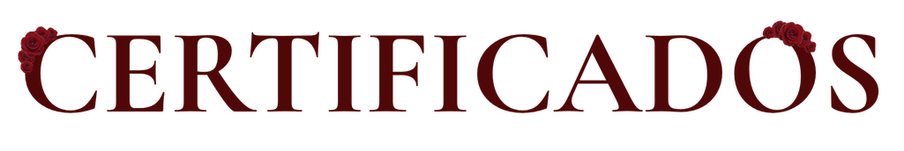
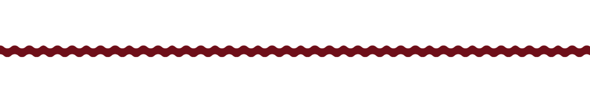
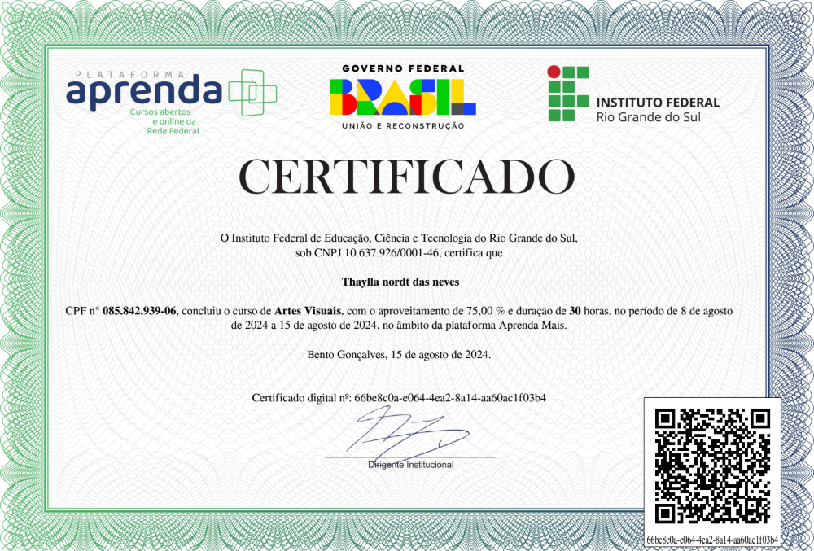
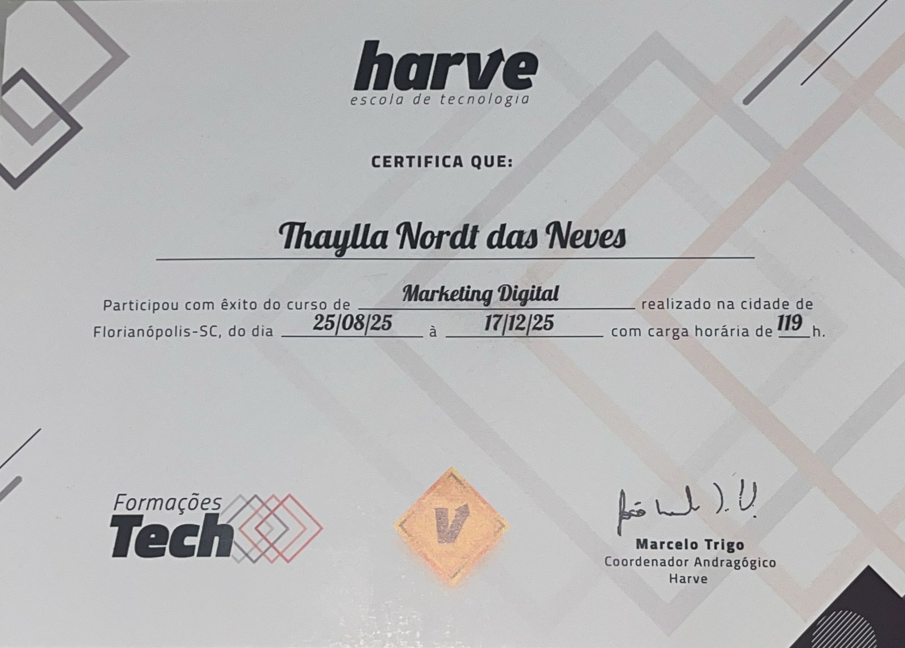
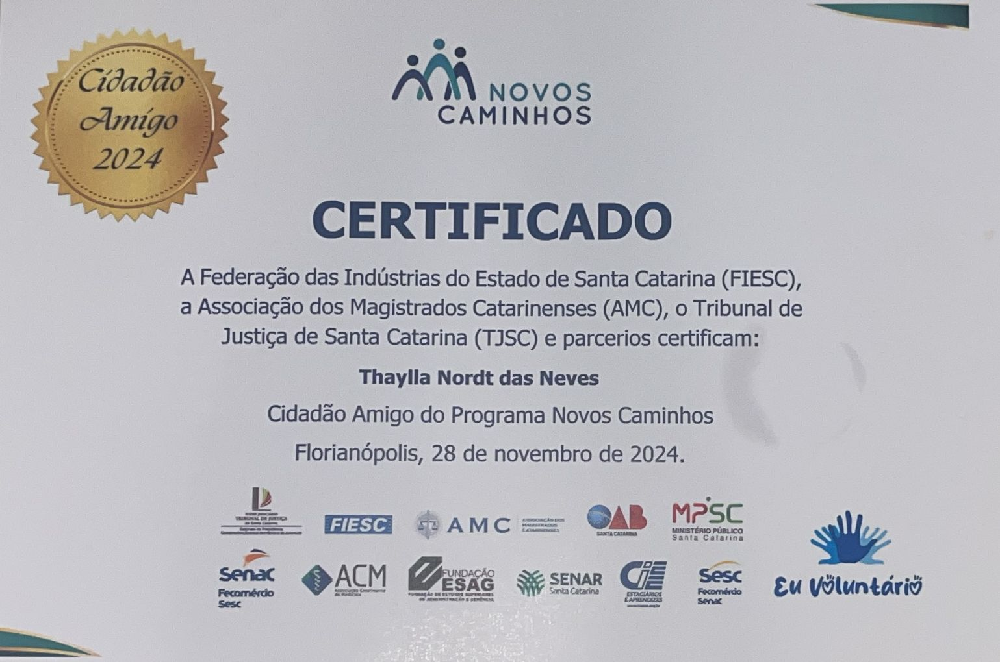
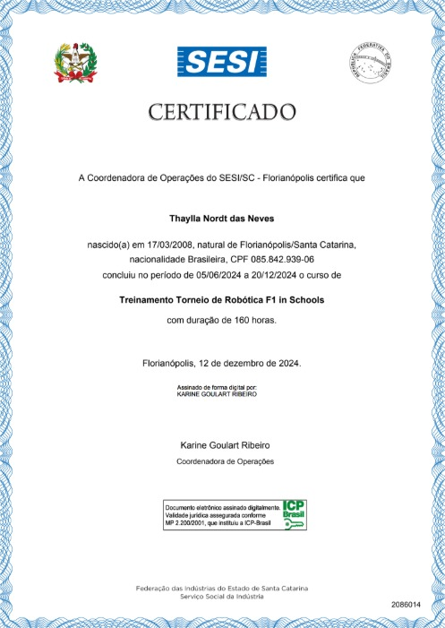
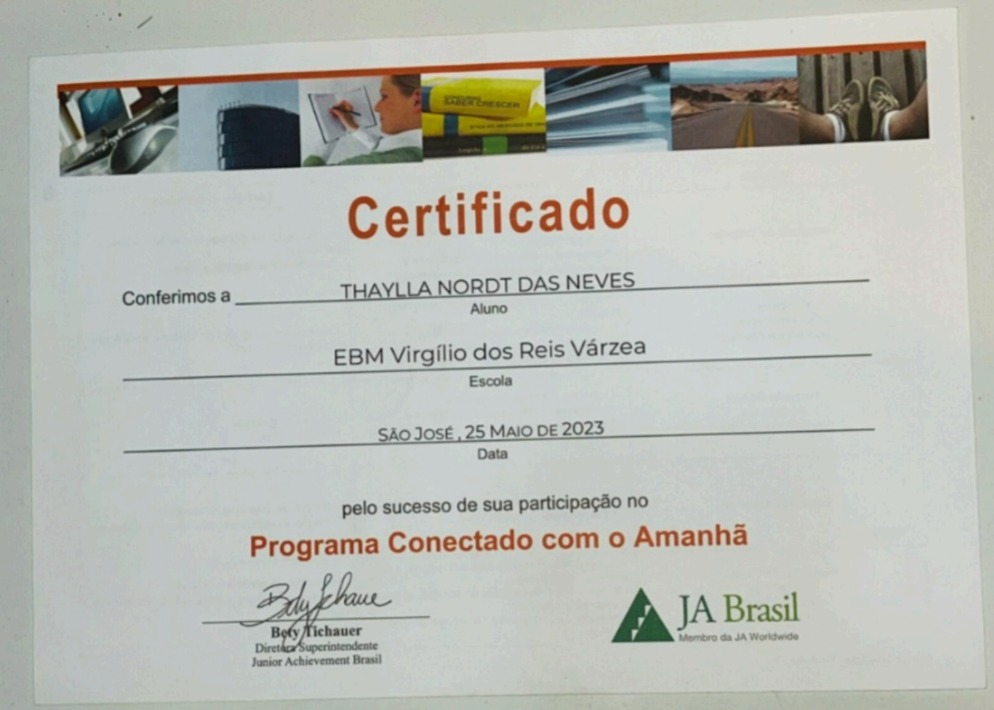
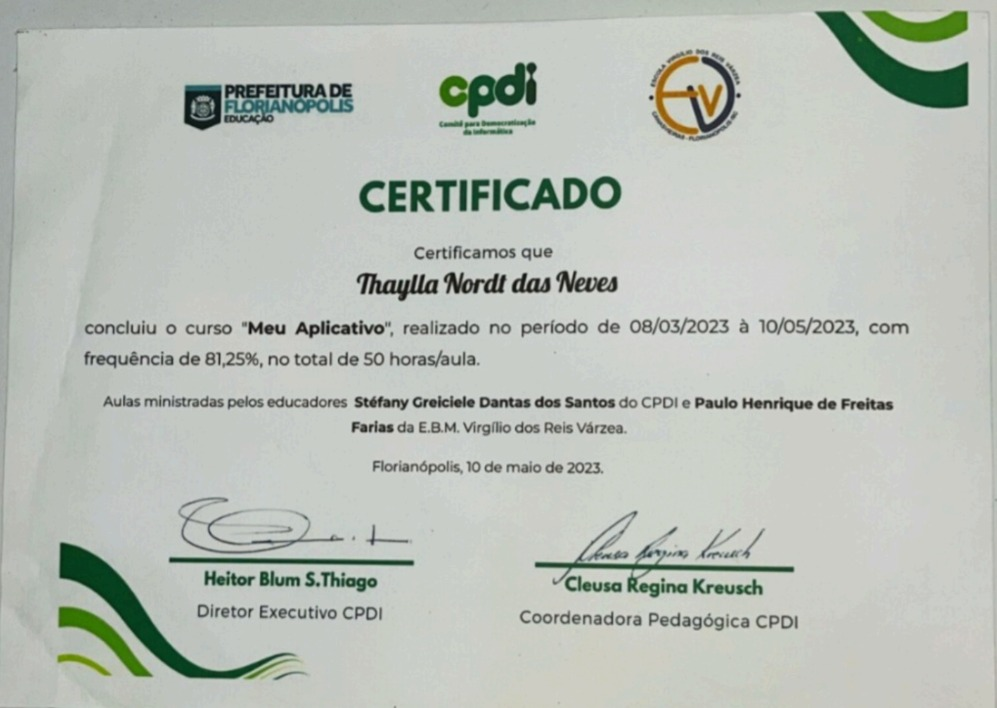

Curso de Artes Visuais,
1. Elementos, estética e composição visual, 2. volume, movimento e manifestações artísticas, 3. animação, fotografia, arte abstrata e figurativa, 4. ilustração, pintura e colagem.
VISUALIZAR →
Curso Marketing Digital
Estratégias de tráfego pago, análise de métricas, copywriting para redes sociais e automação de marketing digital.
VISUALIZAR →
Certificado de voluntariado
Aulas de introdução ao marketing digital, educação financeira básica e modelagem 3D para crianças em situação de vulnerabilidade social, incluindo a criação e impressão de modelos tridimensionais desenvolvidos pelos próprios participantes.
VISUALIZAR →
Treinamento Torneio de Robótica F1 in Schools
Treinamento para o Torneio de Robótica F1 in Schools, envolvendo construção e programação de robôs com montagem de estruturas e mecanismos, aplicação de raciocínio lógico, lógica de programação, transmissão de movimento, arranjos de engrenagens, ferramentas de tecnologia da informação, prototipagem e modelagem 3D. Desenvolvimento de projetos de pesquisa com fundamentos de gerenciamento de projetos (Kanban e plano de ação), design thinking, investigação de problemas, criação de soluções inovadoras e desenvolvimento de protótipos e produtos mínimos viáveis. Formação de valores interpessoais com foco em organização, responsabilidade, comunicação, autonomia, resolução de problemas complexos, compartilhamento de conhecimento com a comunidade e técnicas de apresentação como elevator pitch.
VISUALIZAR →
Programa Conectado com o Amanhã
Programa de orientação profissional voltado para reflexão sobre carreira e preparação para o mercado de trabalho, abordando empregabilidade, competências comportamentais (CHA), liderança, ética, gestão de carreira, definição de metas e planejamento profissional. Inclui também orientações sobre elaboração de currículo, entrevistas de emprego, networking e empreendedorismo.
VISUALIZAR →
Curso Meu Aplicativo
Conteúdo programático envolvendo o uso de ferramentas do Google, estudo dos Objetivos de Desenvolvimento Sustentável (ODS), criação de designs no Canva e desenvolvimento de aplicativos na plataforma Fábrica de Aplicativos, totalizando 50 horas de formação.
VISUALIZAR →